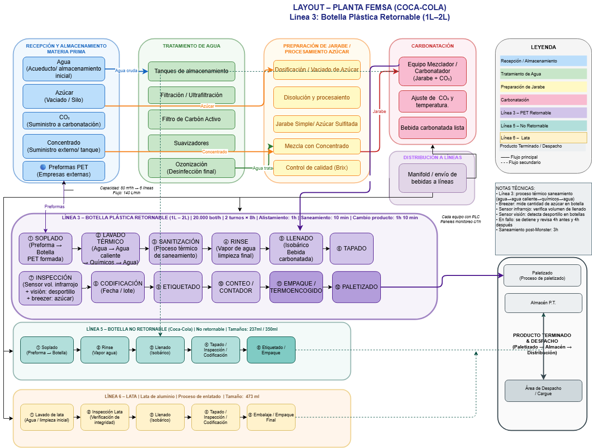

Indicadores de producción
Análisis detallado de eficiencia, calidad y tiempos por línea evaluada.
Monster Energy
Indicadores de la línea de latas: OEE, tiempos de ciclo y análisis de paradas.
Ver indicadoresCoca-Cola Retornable 1.5 L
Eficiencia, lavado, velocidades nominales y causas de descarte en botellas de vidrio.
Ver indicadoresCoca-Cola No Retornable 2.5 L
Comportamiento operativo de la línea PET, inspección automática y control de calidad.
Ver indicadoresValue Stream Mapping
Representación del flujo de materiales e información a lo largo del proceso productivo.

Layout de líneas FEMSA Coca-Cola
Disposición física de las líneas y el flujo de materiales dentro de la planta.

Líneas de producción analizadas
Flujo productivo, velocidades nominales y características de cada línea incluida en la propuesta.
Botella retornable de vidrio — 237 ml
Proceso de lavado con soda cáustica, inspección visual y automática, llenado isobárico y etiquetado. Opera de 6 a.m. a 2 p.m.

Botella retornable de vidrio — 350 ml
Mayor velocidad nominal del conjunto retornable. Igual secuencia de lavado, inspección y llenado. Opera de 6 a.m. a 2 p.m.

Evaluación financiera
Costos, supuestos, flujo de caja e indicadores de retorno de la propuesta de automatización.
Resumen ejecutivo
Visión general de la evaluación financiera, conclusiones y recomendaciones principales de la propuesta.
Ver resumen ↗ F2Supuestos
Tasas, horizontes de evaluación y criterios base del modelo financiero.
Ver supuestos ↗ F3CAPEX
Inversión en equipos, instalación e integración del sistema automatizado.
Ver CAPEX ↗ F4OPEX y Beneficios
Costos operativos proyectados y beneficios cuantificados de la automatización.
Ver OPEX ↗ F5Flujo de caja
Proyección del flujo neto durante el horizonte de evaluación del proyecto.
Ver flujo ↗ F6Indicadores financieros
VPN, TIR y período de retorno de la inversión para la propuesta presentada.
Ver indicadores ↗